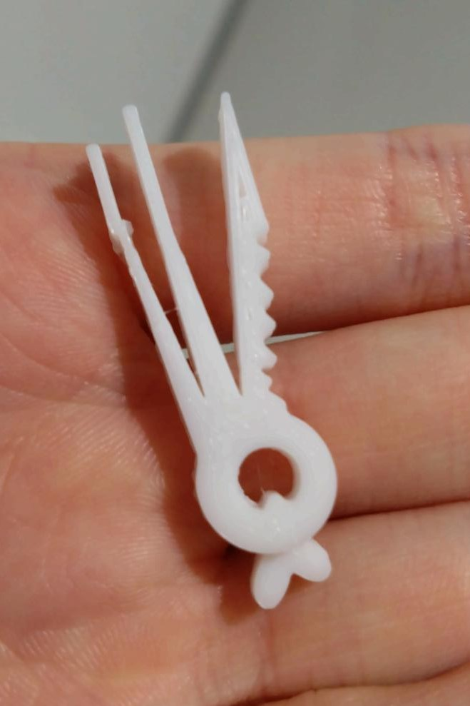
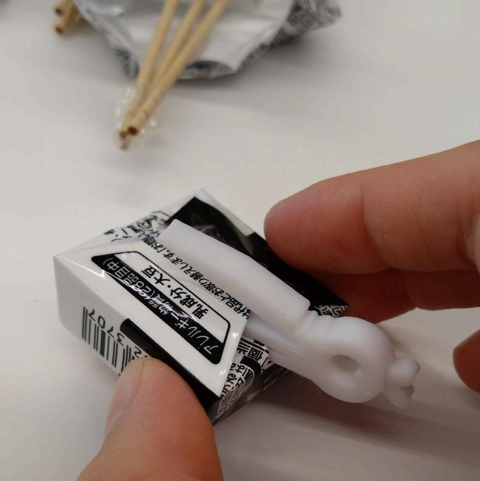
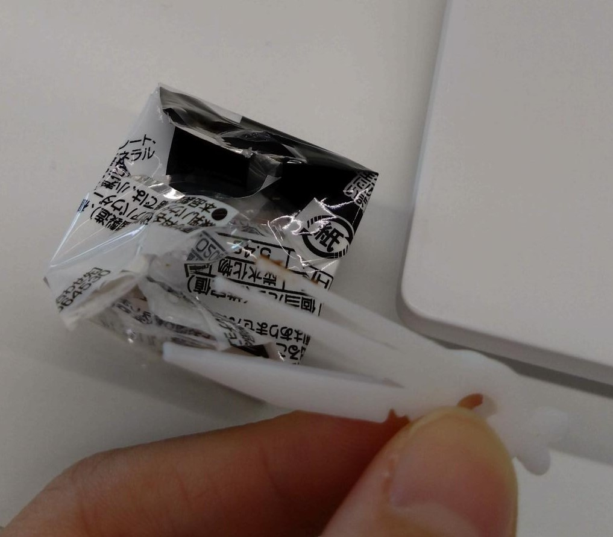
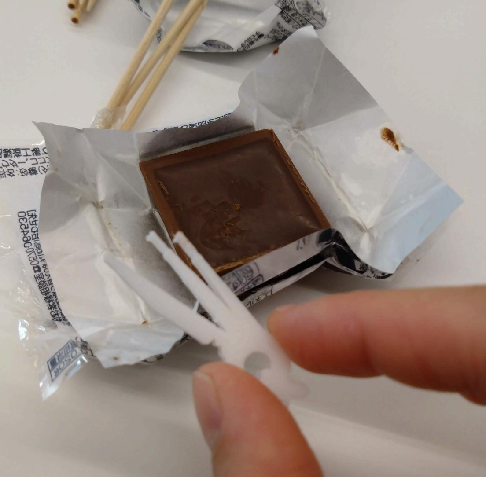
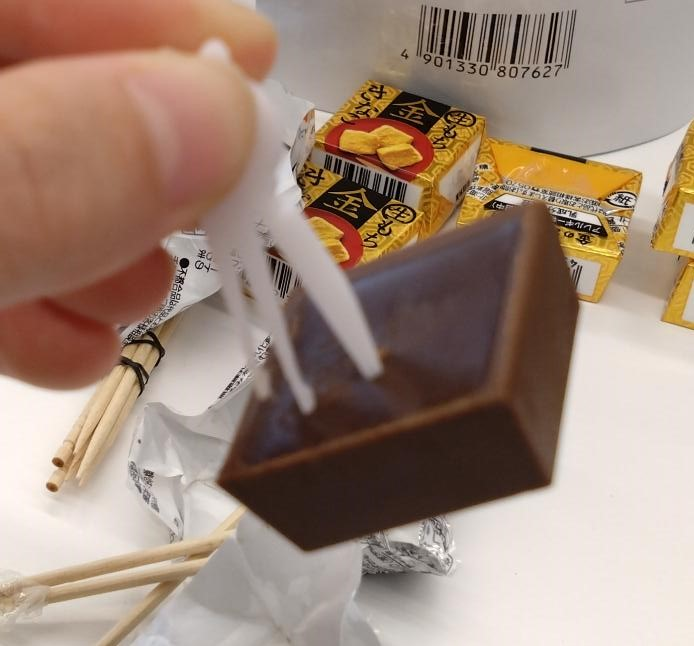
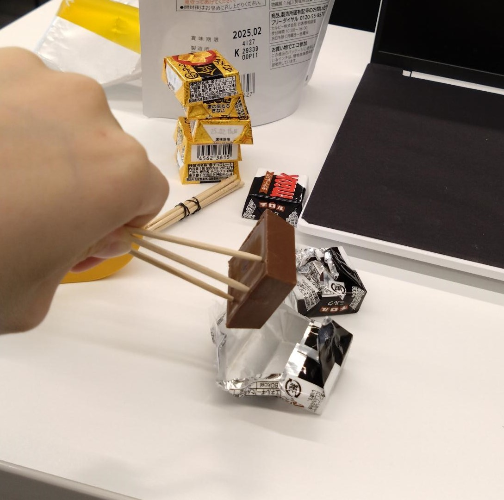
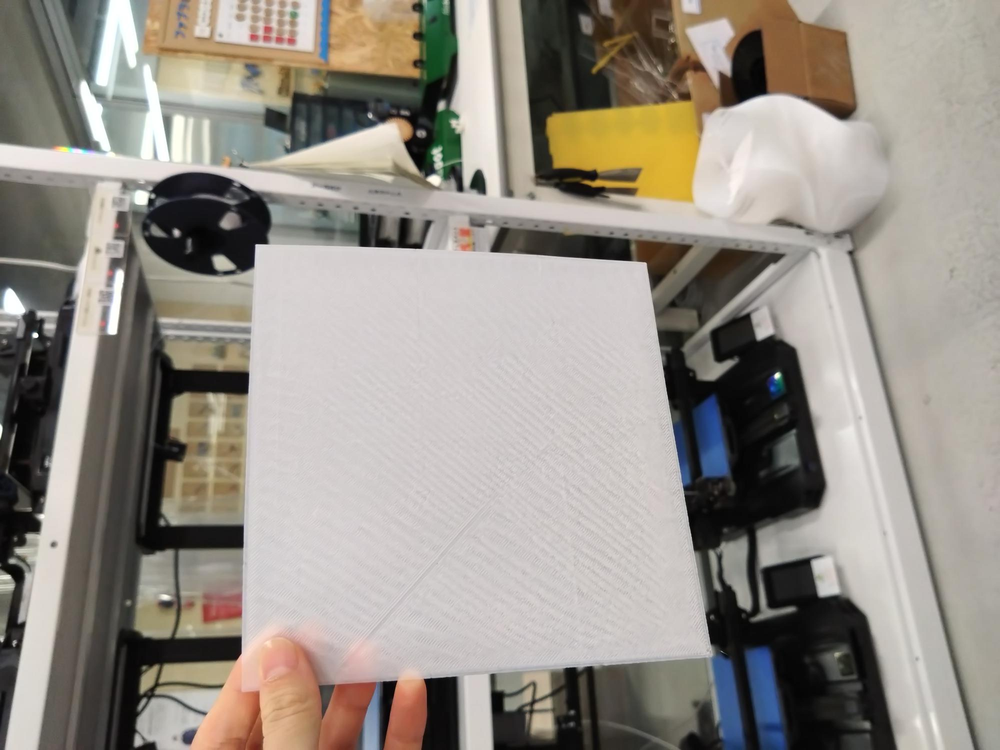

桃太郎お助けアイテム

主な機能
・桃を川からひっぱりあげる
・動物たちにキビ団子をあげる
・鬼を退治する
・宝を持ち帰るときになんかテンション上がる
詳しく
まず、桃を川から引っ張り上げるときは、わっかの部分に紐を通して引っ張り上げます。
滑って紐が手から抜けることを阻止できます。
次にキビ団子のあげ方についてです。
現代においてキビ団子を都合よく作れる人なんてかなり希少だと思うので、この桃太郎はそこら辺のコンビニで売っているチロルチョコをキビ団子の代わりにします。昔々に３Dプリンターなんてあるはずありませんしね。
（なお、このチロルチョコはミルク味になっていますが、今回のみ見やすさのためにミルク味を使っています。実際に使う際はきな粉餅味がいいです）
（さらに、今回はSDGsのために完成品とは一つ古いバージョンの写真を用いています。こちらの機能は完成版と何も変わりませんので、あらかじめご了承ください。）
取り出し方についてですが、下の画像のようにピンセットを差し込み、グイっとやると両面テープが取れます。
そして、包装紙を剥がせばそのままチョコが出てきます。
最後にそれをぶっ刺したら手を汚さずにチョコを取り出すことができました。




そして、鬼の退治の仕方についてですが、下のピンセットにギザギザした棒があるのが分かるでしょうか。
そうです、鬼の角をこれで削ります。
威力の弱さを懸念される方もいらっしゃるとは思いますが、ご安心ください。
最近の鬼の角は脆いので、これだけでぶっ壊れます。
根拠は『勘』です。
（勘というと投げやりのように感じられるかもしれませんが、私は勘を「過去の経験に基づく即時計算」と解釈しています。なのでOKです）
最後に、宝を持ち帰るときについてですが、これはわっかの部分の桃の飾りによるものです。
桃にまつわるものがあることで、「自分は桃太郎なんだ」と桃太郎に実感を持たせることができ、それによって鬼を倒した達成感と共に疲労回復効果も見込めます。
:)
なぜこれを作ったのか
桃太郎と鬼がいつ現れるかわからないから。
構成段階の色々
スケッチもしましたが、正直よくわからなかったので、爪楊枝で立体スケッチしました。

また、元々は先端などをこの爪楊枝ぐらい細くしていましたが、3Dプリンターの一番細いのが思ったより太かったので、太らせました。
3Dプリンターは細かな造形に向かないです。
stlファイル
ピンセット
弱点
・使い捨て
・小さいから失くす
・そもそもの話、大正には既に炭治郎が居たから鬼が絶滅危惧種に指定されている可能性がある
紙飛行機
紙飛行機を作りました。


が、上手くいかないので、先輩のアドバイスを参考に今度もう一回印刷します。
どこが上手くいかなかったのかの言語化は、後日やる気がある時にやります。
（気が向いたらです）
（でもそこから先は書いた所で友達以外見ないと思うので、多分ここには纏めません）
（見たかったら直接声掛けてください）